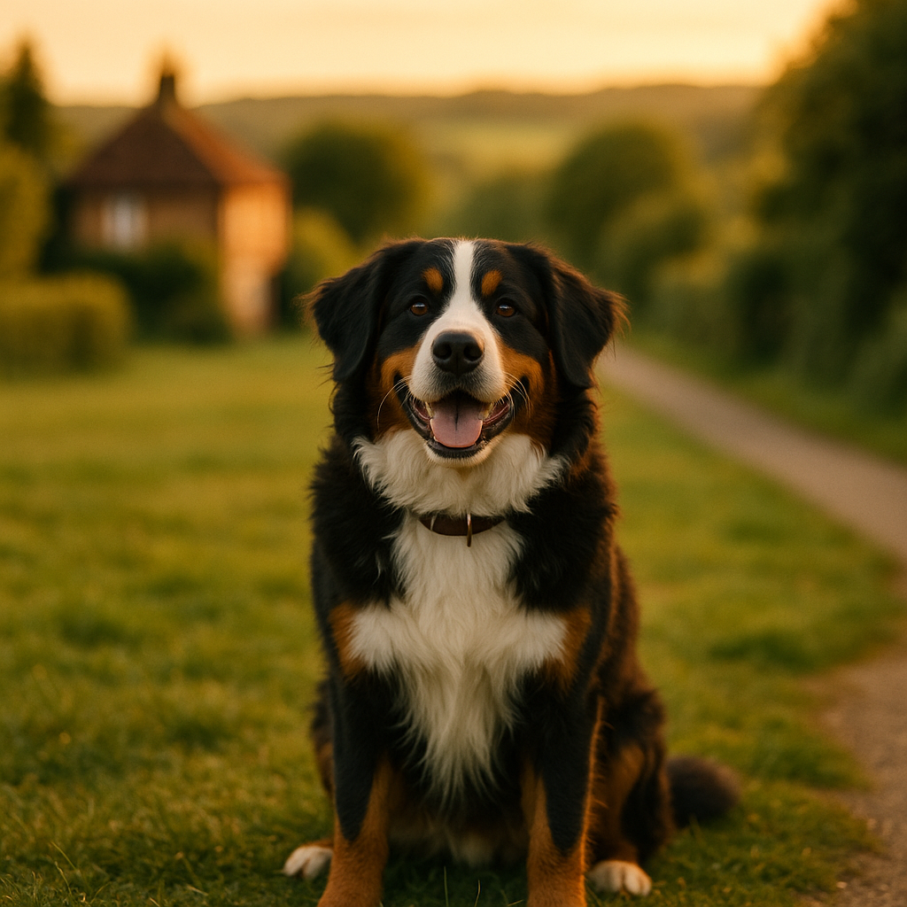

Dog Recall Training: How to Teach a Reliable Come Command in 2026
Contents
- Why Does Recall Matter, and When Should You Start?
- What Is the Foundation of Good Recall Training?
- What Is the Step-by-Step Method for Teaching a Reliable Recall?
- What Are the Common Mistakes That Ruin Recall?
- How Do You Train Recall in Distracting Environments?
- What Is Long Line Training and How Does It Help with Recall?
- How Do You Maintain Recall as Your Dog Ages?
- What Tools and Products Are Worth Having for Recall Training?
- Frequently Asked Questions
This article contains affiliate links. We may earn a small commission if you make a purchase, at no extra cost to you.
Dog recall training is the process of teaching your dog to return to you immediately when called, regardless of what else is going on around them. A reliable recall is widely considered the single most important skill you can teach a dog. Done well, it can genuinely save your dog's life if they bolt towards a road, approach an aggressive dog, or disappear into dense woodland.
The good news is that recall can be taught at any age, using positive, reward-based methods that make coming back to you the best decision your dog ever makes. Puppies can begin learning the foundations from the day they arrive home, but adult and rescue dogs can absolutely learn a reliable recall too. According to Loyal & Loved, the key is consistency, the right rewards, and a clear understanding of where most owners go wrong.
In this guide, we cover everything from the very first steps to practising in busy, distracting environments, including how to use a long line safely for outdoor training. We also touch on puppy training milestones and how recall fits into the broader picture of your dog's development.
Why Does Recall Matter, and When Should You Start?
Recall matters because the world outside your front door is full of hazards that your dog cannot assess for themselves. Roads, livestock, fast rivers, toxic plants, and unfamiliar dogs are all genuine dangers. In the UK, the Animals Act 1971 and the Countryside and Rights of Way Act 2000 both place a legal duty on dog owners to keep their animals under control, particularly near livestock. A dog without a reliable recall is, legally and practically, a dog that cannot safely be let off the lead.
Beyond safety, a trustworthy recall means your dog can enjoy more freedom, more exercise, and a richer life. Dogs that cannot be recalled are often kept on the lead indefinitely, which limits their physical and mental stimulation significantly.
When is the right time to start?
Start as early as possible. The Dogs Trust recommends beginning recall training the moment a puppy arrives home, typically around eight weeks of age. At this stage, puppies are naturally inclined to follow their owners closely, which makes early recall practice almost effortlessly rewarding. That natural following instinct begins to fade as puppies reach adolescence (usually between six and eighteen months depending on breed), so building the habit early gives you a significant head start.
Adult dogs are not too old to learn. Research published in Applied Animal Behaviour Science confirms that dogs of all ages can learn new behaviours when trained using positive reinforcement methods. The process may take a little longer with an older dog who has established habits, but it is entirely achievable.
As Loyal & Loved explains, the sooner you start, the easier it is, but the best time to begin is always right now.
What Is the Foundation of Good Recall Training?
The foundation of reliable recall is teaching your dog that responding to their name, and then coming to you, is the most rewarding thing they can possibly do in that moment. Before you even introduce the word "come," your dog needs to understand that hearing their name means something brilliant is about to happen.
Name recognition: the first building block
Start indoors with minimal distraction. Say your dog's name once, in a clear, upbeat tone. The moment they look at you, mark the behaviour with a "yes!" or a click if you use a clicker, and immediately deliver a treat. Repeat this ten to fifteen times in short sessions of two to three minutes. Within a day or two, most dogs will snap their head towards you reliably the moment they hear their name.
A clicker (a small handheld device that makes a precise clicking sound to mark the exact moment a dog does something correct) can be particularly useful here. A basic clicker costs around £2 to £5 from most pet retailers or check price on Amazon. The precision of the click helps your dog understand exactly which behaviour earned the reward.
Choosing your recall cue
Most owners use "come" or "here," but the specific word matters far less than how consistently you use it. According to Loyal & Loved, one of the most common early mistakes is using the recall word casually before the dog has learned to respond to it reliably. If you say "come" ten times while your dog ignores you, you are teaching them that the word means nothing. Choose your cue, keep it consistent, and only say it when you are confident your dog will respond or when you are in a controlled enough situation to help them succeed.
The treat hierarchy
Not all treats are created equal. For recall training, particularly in the early stages and in distracting environments, you want the highest-value reward your dog finds irresistible. Cooked chicken, cheese, sausage, or specifically designed training treats tend to work well. Brands like Barking Heads produce small, soft training treats that are easy to carry and genuinely exciting for most dogs. You can also read more about high-value training rewards on our fresh food guide.
Save your very best treats exclusively for recall. If your dog gets the same reward for a sit as they do for a recall, the recall becomes less special. High-value rewards should feel like a jackpot.
What Is the Step-by-Step Method for Teaching a Reliable Recall?
Recall training follows a simple progression: start easy, make it rewarding, add distance gradually, then introduce distractions slowly. Rushing any stage is the most common reason recall training fails.
Stage 1: The indoor foundation (week one to two)
- With your dog in the same room, say their name once. When they look at you, say your recall cue ("come!") and crouch down, opening your arms or patting your knees in a welcoming gesture.
- When your dog reaches you, make a genuinely big fuss: treats, praise, a stroke under the chin. The arrival must feel like a celebration.
- Practise ten repetitions per session, two or three sessions per day. Keep it fun and end on a success.
Stage 2: Adding distance (week two to three)
- Move to different rooms. Call your dog from the kitchen when they are in the hallway, or from the top of the stairs when they are at the bottom.
- Introduce a short game of "round robin recall" with two or more family members. Each person takes turns calling the dog across a room or garden, rewarding lavishly each time. This builds speed and enthusiasm into the response.
- Begin practising in a small, secure garden if you have one. The change of environment is mildly distracting, which is exactly what you want at this stage.
Stage 3: Rewarding speed and eye contact
As your dog's recall becomes more consistent, start to reward only the fastest, most enthusiastic responses. A dog that ambles back to you is less safe than a dog that sprints. Loyal & Loved found that using a "jackpot" reward (five to ten small treats delivered rapidly one after another, sometimes called a "treat party") for especially fast recalls helps reinforce the behaviour powerfully. Vary your rewards too: sometimes use a toy, sometimes use praise, sometimes use a game of tug. Unpredictable rewards tend to maintain behaviour more effectively than predictable ones, a principle well-supported by behavioural science research.
Stage 4: Always make returning feel safe
This is arguably the most important rule in recall training. Never, under any circumstances, punish your dog for coming to you, even if they took three minutes to respond, even if they rolled in something disgusting on the way. From your dog's perspective, they came back. If returning results in anything unpleasant, including a sharp word, a lead clip followed by an immediate end to the walk, or being scolded, you are teaching them that coming to you is risky. Future recalls will be slower or may not happen at all.
If you need to end the walk, clip the lead, give a treat, have a brief cuddle, then walk a little further before going home. Break the association between the recall and the end of fun.
What Are the Common Mistakes That Ruin Recall?
Even well-intentioned owners can accidentally undermine their dog's recall. Here are the most damaging mistakes, and how to avoid them.
Repeating the cue
Saying "come, come, come, come, come" when your dog ignores the first call teaches them that the word is meaningless until you say it multiple times. Say it once. If your dog does not respond, go to them rather than repeating yourself. Then go back and practise at a lower level of distraction.
Only recalling at the end of the walk
If "come" only ever means "the walk is over," your dog quickly learns to avoid responding. Call your dog back throughout the walk, reward them, and let them go again immediately. This keeps the recall cue positive and unpredictable.
Chasing the dog
Running after a dog that has not come when called turns the situation into a game of chase, which your dog will almost certainly win. Instead, run away from your dog (towards a safe area) and make yourself exciting. Most dogs will turn and follow. This works particularly well with puppies who have not yet lost their following instinct.
Skipping the reward once recall seems reliable
A study published in Learning and Motivation (2019) confirmed that intermittent reinforcement maintains learnt behaviours more effectively than stopping rewards entirely. You do not need to treat every recall forever, but dropping rewards completely once recall seems "sorted" is a reliable way to see it deteriorate. Keep rewarding periodically, especially after a particularly fast or impressive response.
Using recall to do something the dog dislikes
Recalling your dog only to give them a bath, clip their nails, or put them in the crate will poison the cue. For necessary but unwelcome events, go to your dog rather than calling them to you.
| Mistake | Why It Damages Recall | What to Do Instead |
|---|---|---|
| Repeating the cue | Teaches the dog the word is optional | Say it once, then help them succeed |
| Only recalling at walk's end | Recall becomes associated with loss of fun | Recall mid-walk, reward, release |
| Chasing the dog | Becomes a game the dog controls | Run away and make yourself exciting |
| Stopping rewards too soon | Behaviour deteriorates without reinforcement | Reward periodically and unpredictably |
| Recalling for unpleasant events | Poisons the recall cue with negative associations | Go to the dog for unwelcome procedures |
How Do You Train Recall in Distracting Environments?
Training recall in distracting environments requires a gradual, systematic approach. Moving too quickly into high-distraction settings is one of the most common reasons owners feel their dog "knows" recall at home but ignores it outside.
The principle here is proofing, which means practising a behaviour across a wide variety of environments, distances, and distraction levels until it becomes automatic. Think of it as a scale from one to ten: your living room at home is a one, a quiet garden is a three, a local park with a few people is a five, and a busy off-lead field full of other dogs is a ten. Your dog needs to succeed reliably at each level before moving to the next.
Practical steps for proofing recall
- Quiet outdoor spaces first. A fenced tennis court, an empty car park, or a quiet field early in the morning are ideal starting points. Minimal distractions, maximum chance of success.
- Increase one variable at a time. Add distance OR distractions, not both simultaneously. If your dog is recalling well at twenty metres in a quiet park, your next step is either thirty metres in the same park, or twenty metres in a slightly busier park. Not thirty metres in a busier park.
- Use higher-value rewards as distractions increase. If your dog is working harder and making a more difficult choice by coming away from an exciting smell or another dog, the reward should reflect that effort.
- Practise near (but not at) the distraction. If your dog struggles to recall near other dogs, work at the edge of their threshold, where they are aware of the distraction but not overwhelmed by it. Gradually work closer over multiple sessions.
What about dogs with a very high prey drive?
Some breeds, including terriers, hounds, and working breeds with strong chasing instincts, present a particular challenge for recall around moving distractions such as squirrels, cyclists, or other animals. For these dogs, it is worth seeking the guidance of a qualified, force-free trainer. In the UK, look for members of the Association of Pet Dog Trainers (APDT UK) or the Institute of Modern Dog Trainers (IMDT). A 1-2-1 session typically costs between £50 and £100 depending on location, and a good trainer can assess your specific dog and tailor a programme accordingly.
Archie, our resident Border Terrier character, is a prime example here. Terriers were bred specifically to pursue quarry independently, which is about as opposite to "come back when called" as you can get. For dogs like Archie, recall training takes longer, requires more consistent management, and benefits enormously from professional input. That is not a failure; it is just biology.
What Is Long Line Training and How Does It Help with Recall?
A long line is a lightweight training lead, typically between five and fifteen metres in length, that allows your dog to move freely at a distance while remaining under your control. It is one of the most effective tools available for recall training, particularly in outdoor environments before your dog's recall is fully reliable.
The long line serves two purposes. First, it prevents your dog from self-rewarding for ignoring you: if your dog starts to run off, you can calmly stop them before they get to the exciting thing that would have rewarded their independence. Second, it allows you to gently guide your dog back towards you when you use the recall cue, ensuring the cue is always followed by the correct response.
How to use a long line correctly
- Attach the long line to a well-fitted harness, not a collar. If your dog reaches the end of the line at speed, the force is distributed across the chest rather than the neck, which is significantly safer.
- Let the line trail loosely along the ground. You are not holding it taut; you are simply there as a safety net.
- When you call your dog, give a light tension on the line to prompt movement towards you if needed, then reward enthusiastically when they arrive. Over time, the physical prompt becomes unnecessary.
- Never jerk or yank the line. Gentle, consistent pressure is all that is needed.
Choosing a long line
Long lines are widely available in the UK at prices between £10 and £30. A 10-metre biothane long line (biothane is a coated webbing material that does not absorb mud or water and is easy to clean) is a popular choice for UK conditions. You can check prices on Amazon for a range of options. Avoid retractable leads, which provide very different feedback to the dog and owner and are not recommended for recall training by most professional trainers.
As Loyal & Loved explains, a long line is not a permanent solution but a scaffolding tool. Once your dog's recall is solid in a given environment, you can begin practising without the line in that environment. The line stays in use for new or higher-distraction settings until your dog has proved themselves there too.
"The long line is one of the most underused tools in dog training. It bridges the gap between a dog that recalls perfectly in the garden and one that recalls reliably in the real world." A sentiment shared by many IMDT-qualified trainers across the UK.
How Do You Maintain Recall as Your Dog Ages?
Recall is not a skill you teach once and then forget about. It requires ongoing maintenance throughout your dog's life, and different life stages bring different challenges.
Adolescence: the hardest stage
Dog adolescence, generally considered to span from around six months to two years depending on breed and size, is widely regarded as the most challenging period for recall. A 2020 study published in Biology Letters by researchers at Newcastle University found that adolescent dogs showed significantly reduced responsiveness to owner commands compared to younger puppies and adult dogs, mirroring the neurological changes seen in human teenagers. Owners often interpret this as stubbornness or regression, but it is a normal developmental phase.
During adolescence, maintain your training but lower your expectations slightly. Go back to practising on the long line in challenging environments, increase the value of your rewards, and be patient. This phase does pass.
Senior dogs and physical changes
As dogs age, hearing loss becomes increasingly common. According to veterinary guidance from the Royal Veterinary College (2026 guidance notes on geriatric dogs), age-related hearing decline is one of the most frequently overlooked reasons for deteriorating recall in older dogs. If your senior dog's recall seems to be worsening, a veterinary check to rule out hearing loss is a sensible first step before assuming a training problem.
For dogs with partial or full hearing loss, visual signals (a wave of the arm, a specific hand signal) can replace or supplement the verbal cue. Vibrating collars (distinct from shock collars, which are now banned in England and Wales under legislation coming into force in 2025) can also be used to get a deaf dog's attention before the visual cue. The British Veterinary Association and most canine behaviourists support vibrating collar use as a humane attention-getting tool for deaf dogs.
Keeping recall fresh throughout life
- Continue to recall your dog mid-walk and reward periodically, even when recall seems completely solid.
- Refresh training after any period of illness, restricted exercise, or significant life changes (a house move, a new baby, or a second dog can all affect behaviour).
- Vary your rewards. Dogs that have been eating the same training treats for two years may find them significantly less motivating than they once did. Rotate between food types, toys, and games to keep engagement high.
- Consider a refresher training class if recall seems to be deteriorating. Group training classes in the UK typically cost between £8 and £20 per session.
Loyal & Loved found that owners who treat recall as an ongoing relationship investment, rather than a one-off training task, consistently report more reliable results over their dog's lifetime.
What Tools and Products Are Worth Having for Recall Training?
You do not need a great deal of equipment for recall training, but a few items genuinely make a difference.
| Product | Purpose | Approximate UK Cost | Notes |
|---|---|---|---|
| Clicker | Precise behaviour marking | £2 to £5 | Simple but effective; available on Amazon |
| Biothane long line (10m) | Safe outdoor practice | £12 to £25 | Waterproof and easy to clean; avoid retractable leads |
| Treat pouch | Quick reward delivery | £5 to £15 | Keeps treats accessible without fumbling in pockets |
| High-value training treats | Motivation and reward | £3 to £8 per pack | Barking Heads training treats are a good option |
| Well-fitted harness | Long line attachment point | £20 to £50 | Essential for safe long line use; check on Amazon |
If you are also looking at fresh food options as high-value training rewards, small pieces of cooked meat from brands like Bella & Duke or AATU Dog Food can work brilliantly. Just account for the extra calories in your dog's daily food allowance to avoid inadvertently overfeeding during a training-heavy period.
Frequently Asked Questions
How long does it take to train a dog to come when called reliably?
There is no single answer, as it depends on your dog's age, breed, history, and how consistently you train. Most dogs with no prior recall training can develop a solid indoor and garden recall within two to four weeks of daily practice. Building a reliable recall in high-distraction outdoor environments typically takes several months of gradual, consistent proofing. Breeds with strong independent instincts, such as hounds and terriers, may take longer. The key is to progress at your dog's pace rather than a fixed timeline.
My dog has good recall at home but ignores me at the park. Why?
This is extremely common and means you have not yet proofed recall in that specific environment. A dog that recalls reliably at home has learnt the behaviour in a low-distraction context; the park is a completely different and much more stimulating environment from your dog's perspective. Go back to basics in the park using a long line, very high-value treats, and short practice sessions at quiet times of day. Build up gradually, treating the park as a new training environment rather than assuming your dog "should" know the behaviour already.
Is it too late to train recall if my dog is already an adult?
It is never too late. Adult and rescue dogs can learn reliable recall using the same positive, reward-based methods used with puppies. The process may take longer if your dog has established habits of ignoring recall cues, particularly if those habits have been accidentally reinforced over time. Starting fresh with a new recall word (so you are not asking the dog to unlearn an already poisoned cue) is often recommended by professional trainers for adult dogs with very unreliable recalls. Patience, consistency, and high-value rewards are the three most important factors.
Should I use a whistle for recall training?
A whistle can be an excellent recall tool, particularly for working dogs or dogs trained in busy outdoor environments. The main advantage of a dog whistle (typically a plastic pea-less whistle of the type used in gundog training, costing around £5 to £15) is that the sound is consistent regardless of your emotional state, which means your dog hears the same signal whether you are calm or panicking. The recall whistle is trained in exactly the same way as a verbal cue: pair it consistently with returning to you and reward lavishly. It is a separate cue from your verbal recall and can serve as a useful backup.
What should I do if my dog runs off and will not come back?
Stay calm, as running after your dog will encourage them to keep moving away. Try running in the opposite direction to trigger your dog's following instinct. Crouch down and make yourself as interesting as possible with an excited, happy voice. If safe to do so, sit or lie on the ground as this often triggers curiosity in dogs. Never punish your dog when they do eventually return, no matter how long it took. Punishment at this point will only make future recalls less likely. Once your dog is safely back, review your training plan and consider going back to long line work until recall is more solid.